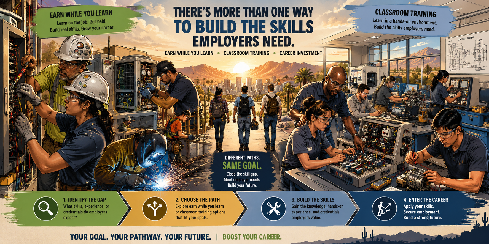

You already identified the skill or credential gap connected to your career goal. Now explore the most efficient way to close it.

Your next BOOST decision
Different paths. Same goal.
Your career goal and skill gap are already established. This experience helps you compare the pathways, employer evidence, time, cost, and career investment needed to close that gap as efficiently as possible.
1. Career Goal
2. Employer Reality Check
3. Close the Gap
4. Compare & Plan
Step 1
Confirm your career goal
Select the occupation you validated through BOOST. Your career goal—not a school or training program—anchors the H3 evidence and career investment pathway.
—Median annual earnings
—Median hourly earnings
—Job openings
—Projected job growth
Employer Reality Check
Does the training close a gap employers recognize?
Training should close an identified skill or credential gap—not simply add another credential. Use employer research to test whether this investment supports entry into your target occupation.
Employer Evidence: Not Yet Validated Consider reviewing several current job postings or speaking with an employer before committing to training.
Step 3
Ways to close the gap for
These approved training options are aligned to your target occupation. Compare how each pathway develops the skills or credentials employers expect.
Explore Training Pathways
Earn While You Learn programs combine paid employment with structured training and may also include classroom instruction, technical education, and industry-recognized credentials. Classroom Training develops occupational skills or credentials primarily through classroom, lab, or school-based instruction.
⚡ An Earn-While-You-Learn Pathway Is Available
This occupation has at least one approved pathway where you may earn wages while developing the skills and credentials employers require. Compare it with classroom options before deciding how to close your skill gap.
Compare & Plan
Compare career investments
Compare up to three ways to close your skill gap. Potential Remaining Cost is the amount above the estimated Pinal County career investment—not a bill or final participant responsibility.
Potential Remaining Cost Acknowledgment
Career Investment Outlook
Program cost—
Potential Pinal career investment—
Annualized target earnings—
Potential annual earnings increase—
Annualized target earnings use the H3 median hourly wage as a labor-market reference and assume 2,080 work hours per year. They are not a guarantee of employment, hours, starting wage, or earnings.
Before I make my training decision…
BOOST • Career Investment Plan
Career Investment Plan
0 selected for comparison
Career Investment Notice: Career investment amounts shown are estimates and do not guarantee funding. Pinal County may invest in career development based on WIOA eligibility, occupational alignment, an identified skill gap, training provider and program cost, other available financial assistance, available funding, and Career Coach approval.